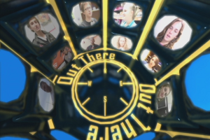

About:
Michael P. Scherer is a Systems Engineer with Autonomous Surface Vehicles, LLC. Previously he was an intern at the NASA Jet Propulsion Lab in Pasadena, CA. He graduated from the University of Central Florida with a degree in Computer Science and a minor in Mathematics.
This site was built entirely from scratch using open source tools: VIM (go ahead, try moving around on this page), GIMP, and Firefox.
Projects:
Systems Analyst
 SonarPhony
SonarPhony (Personal)
Open source interface to Vexilar SonarPhone fish finders.
Post-Baccalaureate
 FPAC
FPAC (NASA JPL)
FPAC: Future Prototype Assessment for Cockpit 2.0 is a touch-based system on the Samsung SUR40 (formerly Microsoft Surface 2.0) for high-level mission planning and sequence development for the ATHLETE robot.
Undergraduate
 AUTOMATON
AUTOMATON (Robotics Club at UCF)
AUTOMATON was designed to compete in the 19th annual Intelligent Ground Vehicle Competition in Rochester, Michigan. In this competition, the vehicle must fully autonomously navigate an obstacle course, locating waypoints and remaining within lane lines.
 Boatname the Brave
Boatname the Brave (Robotics Club at UCF)
Designed for competition in the 2010 and 2011 RoboBoat competitions, Boatname the Brave is a fully autonomous surface vehicle (ASV).
 Telesurgery
Telesurgery (UCF)
Simulation for remote operation of a robotic arm with delay.
Highschool

Video Production (CATCOM)
This is an archive of old work in 2D and 3D motion graphics while a member of CATCOM at the Center for Advanced Technologies at Lakewood High School.